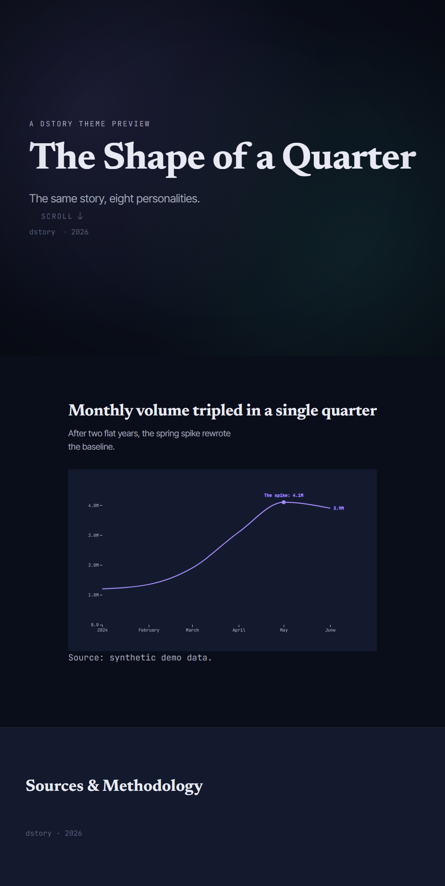
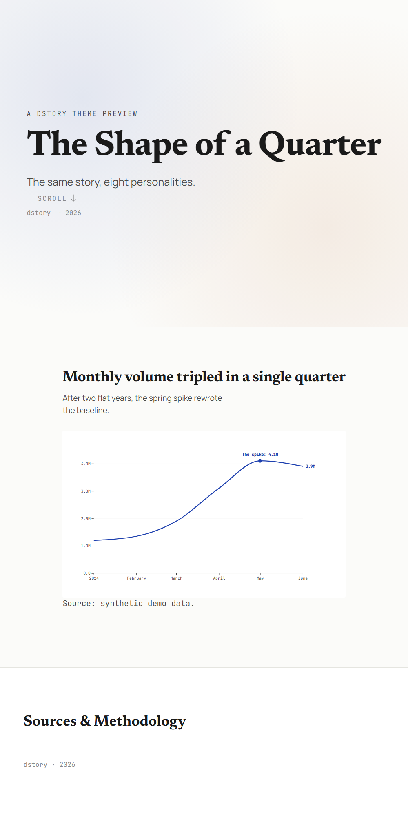
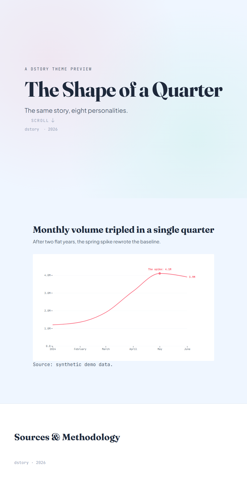
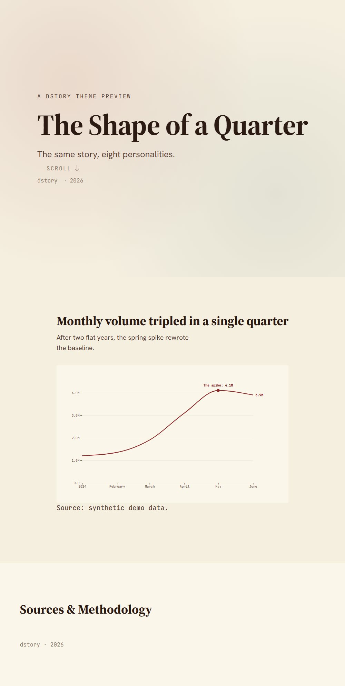

brutalist
Raw, unapologetic, monospace-heavy. For tech criticism, contrarian takes, design culture.
dstory init my-story --theme brutalist
{kind=link}

data-fi
Futurist, cinematic, chart-as-art. For hero data visualizations and science-fiction-tinged storytelling.
dstory init my-story --theme data-fi

editorial-noir
Urgent, somber, magazine-cover serious. For long-form investigations and stories about loss, risk, or consequence.
dstory init my-story --theme editorial-noir
{kind=link}

minimal-light
Restrained, gallery, lots of whitespace. For design-conscious general audiences with a museum tone.
dstory init my-story --theme minimal-light
{kind=link}

playful-pastel
Friendly, illustrative, kid- and student-friendly. For educational explainers, optimistic stories.
dstory init my-story --theme playful-pastel

scientific-bright
Rigorous, optimistic, paper-like. For research, methodology-first stories, and peer audiences.
dstory init my-story --theme scientific-bright

tech-glow
Dense, dark, terminal-influenced. For developer audiences, ML/data infrastructure stories.
dstory init my-story --theme tech-glow
{kind=link}

warm-print
Print-magazine warmth, ledger feel. For economics, labor stories, longform reporting.
dstory init my-story --theme warm-print